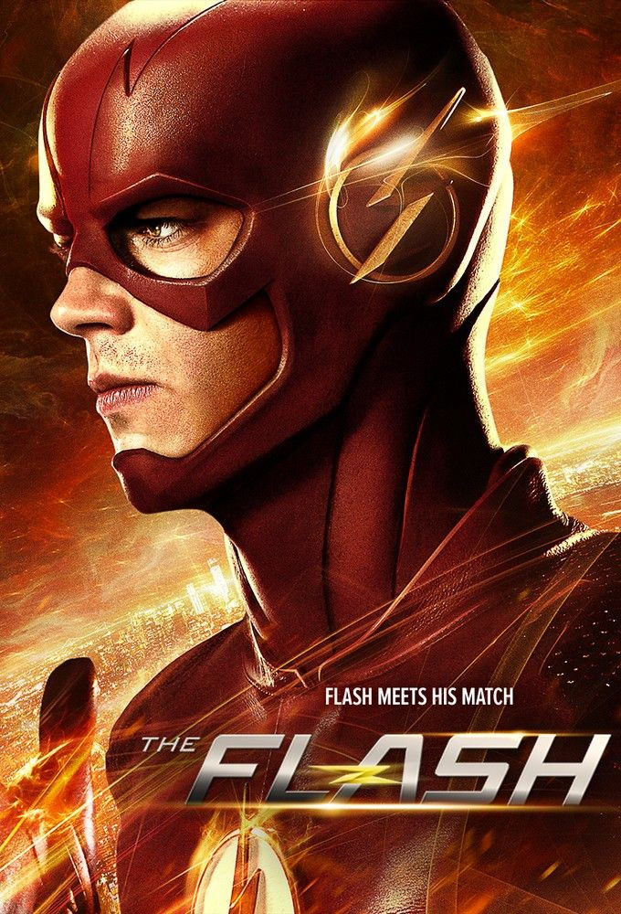
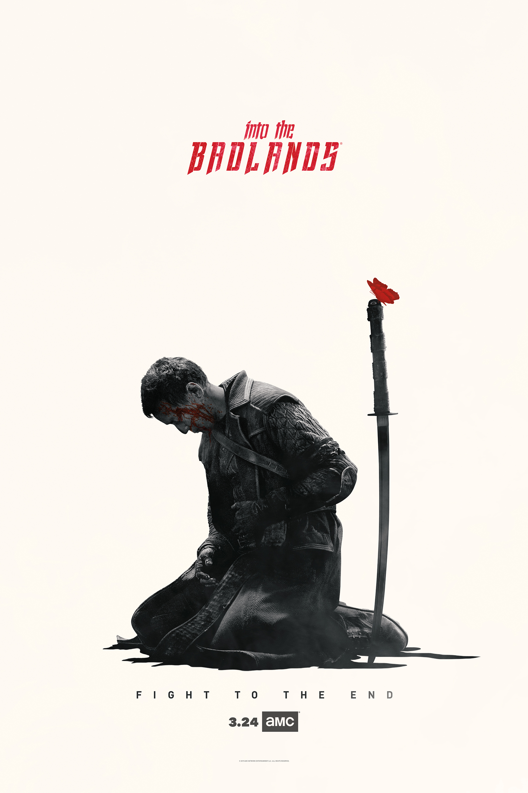

TV Shows
Movies are one thing, but fortunately for us, there are more modern tv shows out there that are free to watch than there are movies. Below are some listed, as well as where you can go to watch them. There is no specific order, but the list might be biased (as most of these lists are).
The Flash
At 11, Barry Allen's life changed completely when his mother died in a freak accident and his innocent father was convicted of her murder. Orphaned Barry later becomes Detective Joe West. Now a crime-scene investigator, his dedication to learn the truth about his mother's death drives him to follow up on every new scientific advancement and urban legend. When his latest obsession - a particle accelerator heralded as a world-changing invention - causes an explosion, it creates a freak storm and Barry is struck by lightning. He awakes from a coma nine months later with the power of superspeed. When he learns that others who have gained powers use them for evil, he dedicates himself to protecting the innocent, while still trying to solve the older mystery.
The Walking Dead
The Walking Dead tells the story of the months and years that follow after a zombie apocalypse. It follows a group of survivors, led by former police officer Rick Grimes, who travel in search of a safe and secure home.
Badlands
Into the Badlands is an American television series that premiered on November 15, 2015, on AMC. The series follows a warrior and a young boy who journey through a dangerous feudal land together seeking enlightenment.
Batwoman
Three years after Batman mysteriously disappeared, Gotham is a city in despair, and it's under the watch of Jacob Kane and his military-grade Crows Private Security, which now protects the city with omnipresent firepower and militia. When the Alice in Wonderland gang targets the firm, Kane's daughter Kate returns home, deciding that if she wants to help her family and her city, she'll have to become the one thing her father loathes -- a dark knight vigilante. With the help of her stepsister Mary and the crafty Luke Fox, the son of Wayne Enterprises' tech guru Lucius Fox, Kate Kane continues the legacy of her missing cousin, Bruce Wayne. Armed with a passion for social justice and a flair for speaking her mind, Kate soars through the shadowed streets of Gotham as Batwoman.
Merlin

This action-packed fantasy-drama revisits the saga of King Arthur and his wizard, Merlin, by focusing on the two characters when they were ambitious young men struggling to understand their destinies. In this telling, Prince Arthur is known to be the heir to the throne (no sword from the stone here). And he is acquainted with all those who will one day form the legend of Camelot, including Lancelot, Guinevere, and Morgana. Merlin is also forced to deal with King Uther's Great Purge, which bans all use of magic.